Clay Bay: maths you can squish
A maths app for children aged 3 to 10, set in a little seaside bay where everything is made of modelling clay. Children press, pull, pinch, swipe, twist and squish, so the maths happens in their hands. Every answer is something they make, and the world tests it: the seesaw tips, the kite flies, the twins compare their slices. And what they make stays alive: the critters they build move into their own bay, and each day's egg hatches into a new friend.

A world of modelling clay
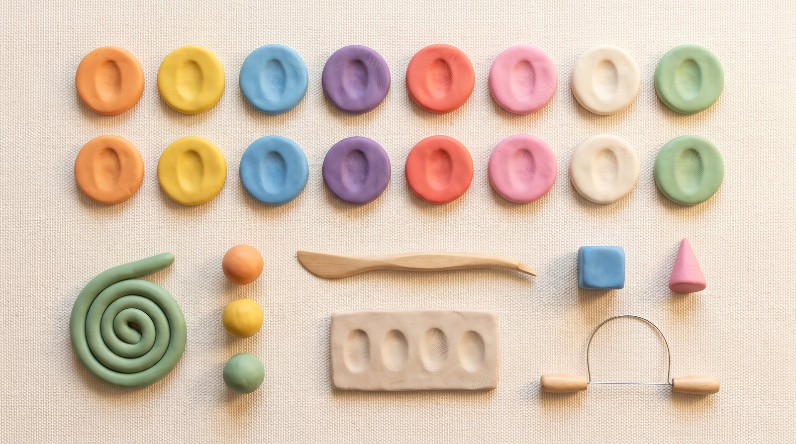
Made to be touched
Every child knows play-dough. Pressing, pulling and squishing clay on a screen feels natural, and every touch leaves a soft dent that slowly fills back in.
Easy to bring to life
Clay creatures are made of separate lumps (a body, eyes, arms, legs), so they come apart cleanly for animation, and clay is meant to squash and stretch. They move like stop-motion puppets.
Exact where it matters
The shapes, cakes, weights and number lines are drawn by the app in the same clay look, so every count and size is exact and changes every round.
#F28C38
#F6C945
#6FB7E8
#8E6CCB
#E9604A
#F08DB0
#FFF4E2
#E8C99A
#7DBA5E
#3B2A4A
Titles and numbers in Fredoka (round and friendly, with a plain 0), reading in Nunito. Numbers always sit on plain clay or cream, never on texture. Ages 8–10 get calmer screens with more room for the maths.
You, six clay friends, and the critters you make
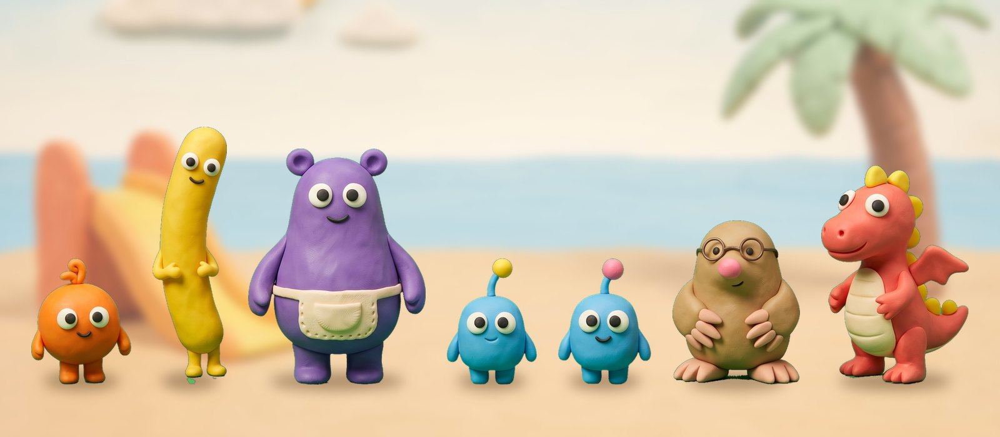
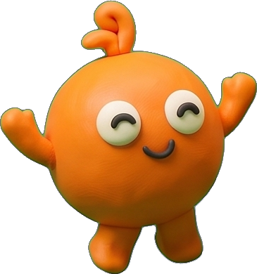
Pom
A small round ball of tangerine clay with a curly tuft. Bouncy and easily excited.
Helps with: counting with the youngest (Poke Pals, Peek-a-Peep).
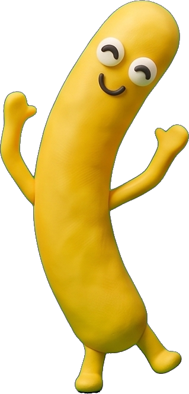
Noodle
A tall, bendy sausage of yellow clay that can curl into corners. Calm and curious.
Helps with: shapes (Pull-a-Shape and the kite festival).
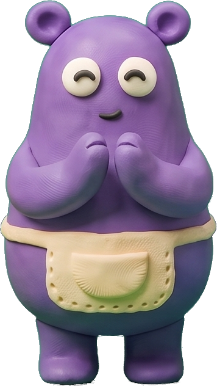
Mumba
A big, gentle purple maker in an apron. She runs the workshop and keeps the nest.
Helps with: building and adding (Critter Maker), the daily egg.
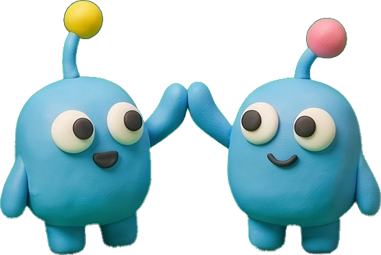
Bim and Bam
Sky-blue twins who weigh exactly the same and check everything is fair.
Helps with: equals and fractions (Seesaw Twins, Fair Slices).
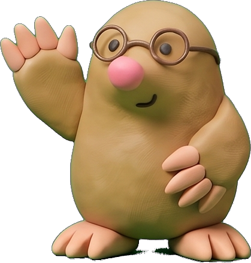
Digsy
A mole-like digger with round glasses and big paws. Patient and precise.
Helps with: place value and decimals (Zoom Dig).
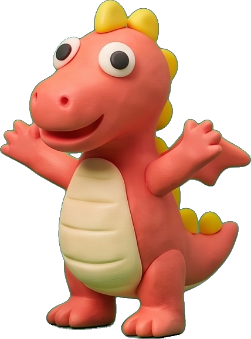
Fizz
A small coral dragon with a drum. Leads the parade; wears the Scale Coat.
Helps with: times tables and speed (Parade Squares, Roll-a-Giant).
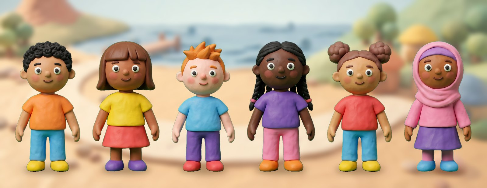
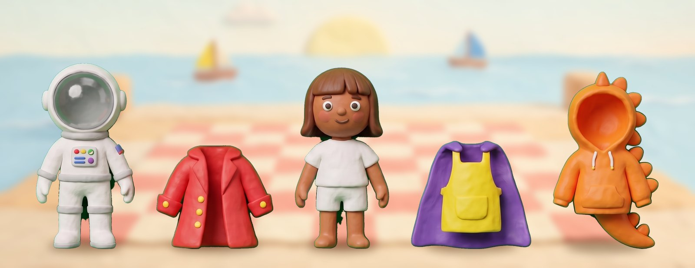
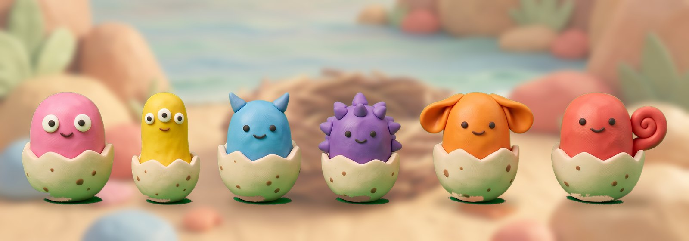
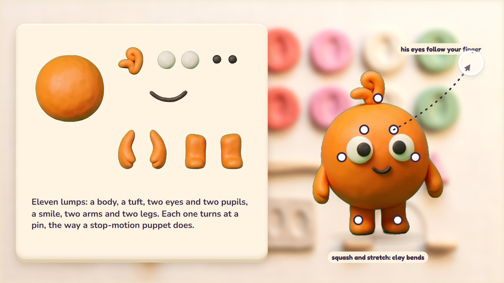
Your fingers are the tools
Eight hands-on moves, each a piece of maths. Every move also works with one finger or a mouse, so no child is left out.
Press with fingertips
Several fingers at once: counting, finger patterns, a whole hand is five.
In: Poke Pals
One finger: tap one at a time
Pull out
Pull a corner out of a shape, or a leg out of a critter.
In: Pull-a-Shape, Critter Maker
One finger: drag
Rub smooth
Rub a corner away: a circle has none.
In: Pull-a-Shape
One finger: tap the corner
Swipe to cut
One swipe cuts clay into parts; equal parts are fair shares.
In: Fair Slices, Parade Squares
One finger: drag a cut line
Squish together, pull apart
Two lumps become one with the same weight; one splits into two.
In: Seesaw Twins, Squish Pairs
One finger: drag one onto the other
Stretch a corner
Stretch a mat into rows and columns.
In: Parade Squares
One finger: + and − buttons
Twist with two fingers
Turning keeps a shape, and keeps an array's total.
In: Pull-a-Shape, Parade Squares
One finger: the ↻ button
Pinch to zoom
Each zoom in shows ten times more marks: place value.
In: Zoom Dig
One finger: + and − buttons
Four rules that make it creative
1 · Many right answers
"A kite with four corners", "any critter with ten parts", "every way twelve can march": there is more than one right answer, the app keeps every way the child finds, and the friends react to each.
2 · Make it, then the world tests it
The child builds an answer and the world tries it: the seesaw is let go, the critter walks out to its customer, the kite flies, the cake is shared.
3 · Feelings, not marks
A wrong answer shows its consequence: a Peep with no seat, a twin with a smaller slice, the seesaw lifting Bim into the air. Never red, never "wrong"; the attempt stays, the friend gives a thinking tip, and after a second miss the working is shown. Stars count first tries only.
4 · What you make stays
Critters move into the bay, kites fly over it, the balance mobile hangs on the pier, giants stand on the hill, and every hatchling joins the Nest Book.
One road, and an egg that hatches
Every day the child walks one short road of five stops (a warm-up, a review, something new, practice, and the day's challenge), about 9 to 13 minutes depending on age. A new clay egg waits in the nest each morning; each stop warms it, and the last stop, the Hatch, is ten questions from what the child has learned. With every answer the shell cracks a little, and after the tenth it hatches, whatever the score.


Roll-a-Giant
The daily warm-up is a speed round with facts the child already knows. Every fact answered rolls a clay ball over another lump of clay, so it grows; at the end the ball becomes a giant that joins Giants' Row, one giant a day. Fizz's Scale Coat has one scale for every fact, and a scale turns shiny when that fact is quick and sure on three different days. The fact stays still and the pad never moves; there is no clock under 8, and no ranking against other children.
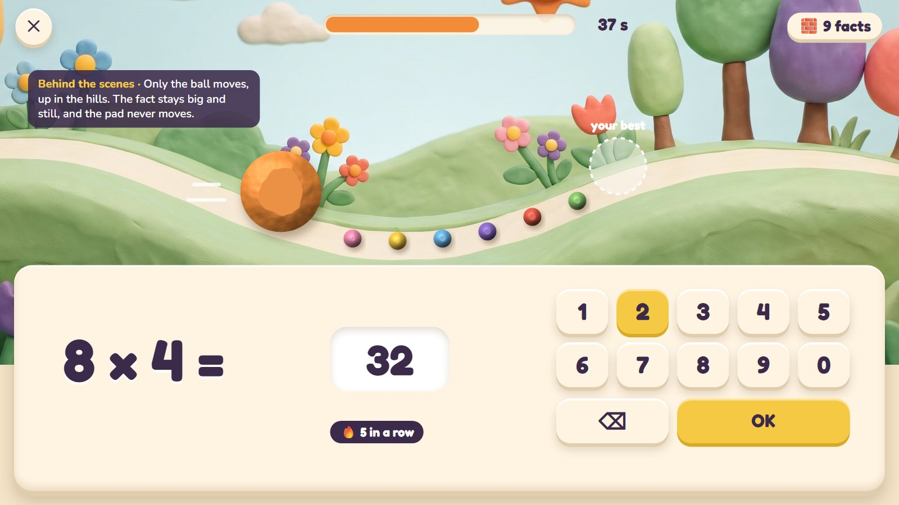
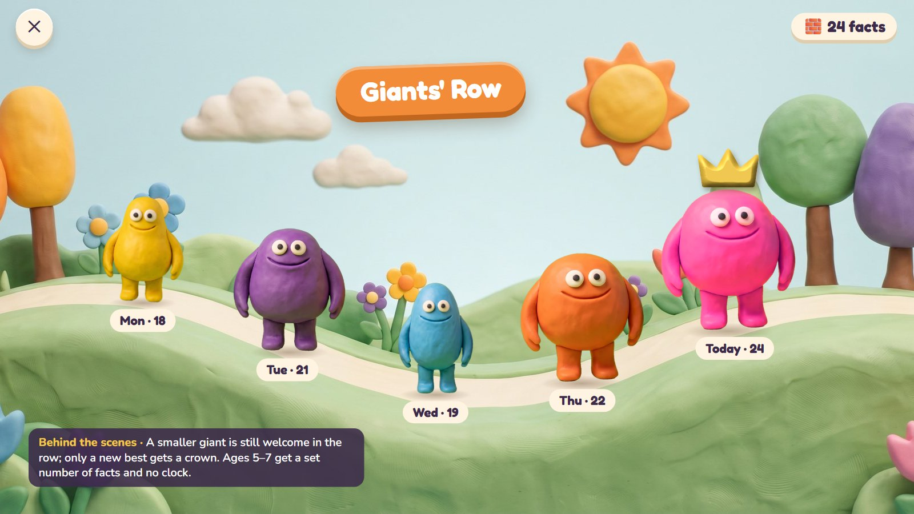
Seven activities, each with a storyboard
From age 3 to 10, each with its own move. Every page shows six moments, including a wrong try, and the rounds, ages and planned mistakes.
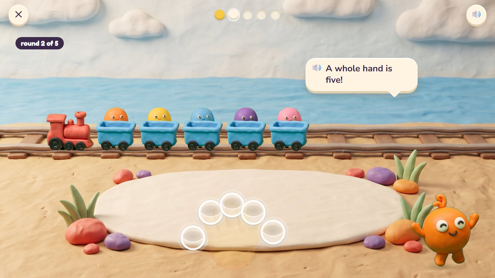
Poke Pals
Pom's tiny friends, the Peeps, sleep inside a soft patch of clay.
Move: press with fingertips, several at once
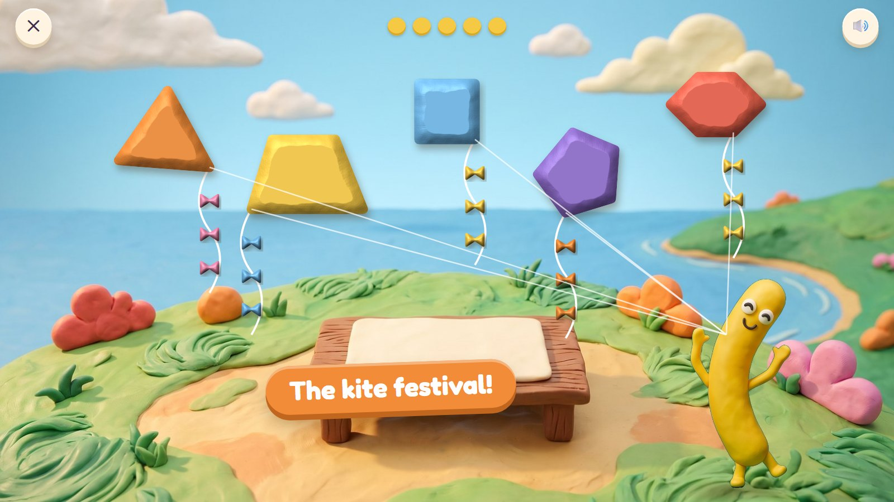
Pull-a-Shape
Noodle is making kites for the kite festival.
Move: pull out a corner, rub it smooth, twist
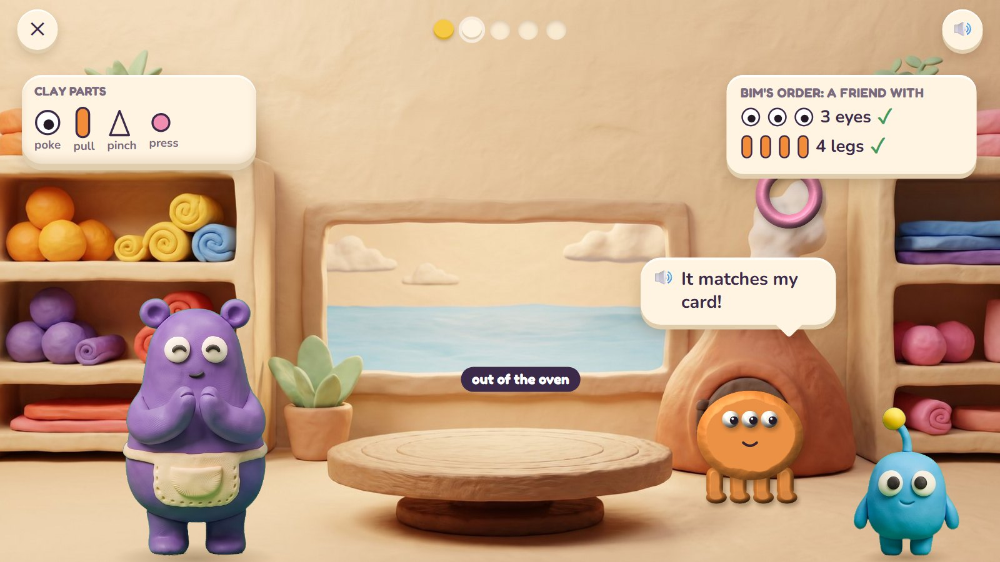
Critter Maker
Critters come to Mumba's workshop with an order card for a new friend.
Move: poke, pull, pinch, press
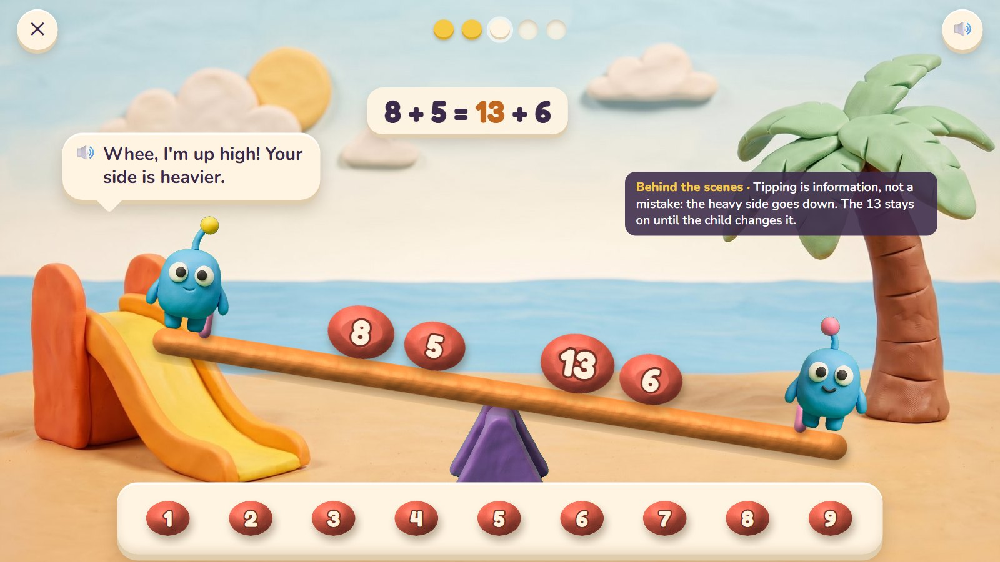
Seesaw Twins
Bim and Bam are twins, so they weigh exactly the same, and only the clay weights decide which way the seesaw tips.
Move: squish together, pinch apart, let go

Parade Squares
Fizz leads the bay's parade, and the critters march in neat blocks with no gaps.
Move: stretch a corner, twist, swipe to split
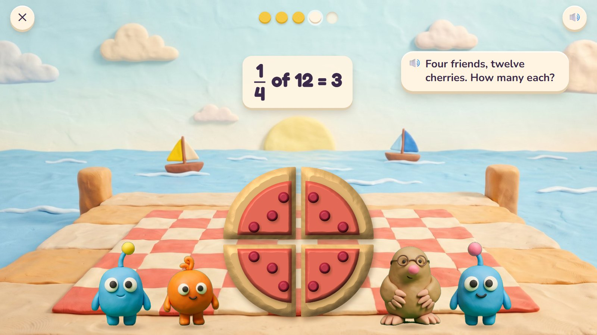
Fair Slices
Bim and Bam are twins, and twins check who got more.
Move: swipe to cut, squish back together
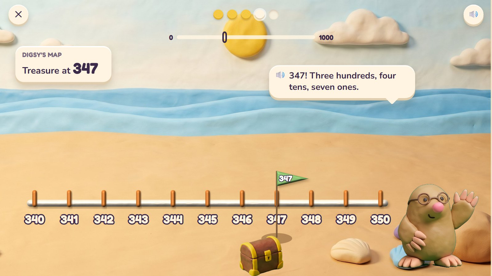
Zoom Dig
Digsy's beach is a giant number line from 0 to 1000, and treasure is buried at exact numbers.
Move: pinch to zoom, drag, tap to dig
Your own bay, plus coins and clothes
🏝️ The bay fills up
The main reward is the child's own bay, filled with what they made: critters, kites, the mobile, giants and a new hatchling every day. Nothing in it can be bought.
🪙 Coins and clothes
As in the first plan: coins for each stop (about 45 a day, 55 at most) buy clay clothes and hats for the avatar. Skin, hair and face are always free. No mystery boxes, nothing expires, and nothing bought makes the maths easier.
Parents get a separate page: skills learned, first tries, where help was needed, shiny facts and time spent.
A small preview first
| Step | What | Roughly |
|---|---|---|
| 0 · A playable preview my pick | Today's road with three activities, one per age and one per new move: Poke Pals (press), Critter Maker (pull) and Fair Slices (swipe); Roll-a-Giant; the egg and the Hatch; Pom rigged; the avatar with a dozen clothes; in a tablet's browser. | 2–3 weeks |
| 1 · The pilot | The other four activities, the skill map from Pre-K to Grade 2 plus the 2, 5 and 10 times tables, the Nest Book, the shop, the parents' page. | 8–12 weeks |
| 2 · Everything else | More activities wave by wave, up to Grade 5, as in the first plan. | months |
| 3 · Accounts and phones | Sign-in and progress on every device, then iPhone and Android apps from the same code. | after the pilot |
Questions
- The clay look: right for the client, and for children from 3 to 10?
- The friends (Pom, Noodle, Mumba, Bim and Bam, Digsy, Fizz): keep, change or add? Are the names right?
- The hands-on moves: which feel strongest? Any you would drop?
- The activities: which three should the preview have? (My pick: Poke Pals, Critter Maker and Fair Slices.) Each page has one more question.
- The daily challenge: the egg that hatches (here), or the first plan's Dive with its card? (the day)
- Speed: Roll-a-Giant with Giants' Row and the Scale Coat? (speed)
- Rewards: the bay filling with what children make, beside coins and clothes: the right balance?
- Which plan to take forward: the first plan, this one, or the first plan with this look and these moves?
- Devices: which tablets and phones do the client's children use? The several-finger press needs a touch screen that reads 5 or more fingers (most do).
- First step: the 2–3 week preview as described?
14 October 2026 · E:\work\new-math-app. Pictures are drafts made with Gemini; storyboards and mock-up screens are HTML (docs/plan/fourth-plan/mock/).